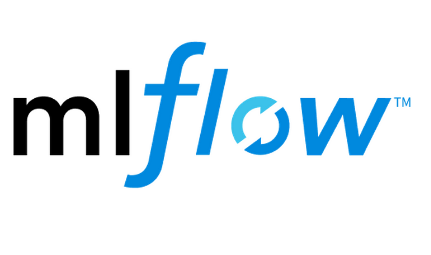
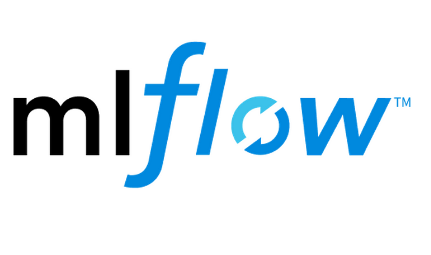

Home
Our goals
Our team is aiming to revolutionize the accounting and finance industry with AI and automation. With our AI platform and applications, the burden of manual work for accountants will be lessened and the accounting service costs for companies will be reduced. We believe the advance of AI technologies will transform the accounting industry and improve the efficiency of accounting services.
Our platform leverages the advanced data science and AI technologies, tools and models to provide an end-to-end pipeline and innovative solutions for accounting service. We provide visualization, statistical insights, predictions and financial reports for the diverse financial datasets. We are aiming to provide applications that acheive the best performance and most friendly user experience.
Our products
The demo for our platform as well as our premier AI and data science solutions are available upon request (see Our Contact.
Part of our projects are in our Git repository.
The state-of-the-art data science and AI tools we are adopting or will adopt are partly shown as follows,


 


Invitation to Investors
As we continue to push the boundaries of applying data science and AI with accounting practice, we sincerely invite investors to join us in the ground-breaking journey to build a smarter and more efficient accounting and finance service and invest in the technology that is shaping a better future.
Connect With Us

About
Our team is aiming to revolutionize the accounting and finance industry with AI and automation. With our AI platform and applications, the burden of manual work for accountants will be lessened and the accounting service costs for companies will be reduced. We believe the advance of AI technologies will transform the accouning industry and improve the efficiency of accounting services. Our team is aiming to revolutionize the accounting and finance industry with AI and automation. With our AI platform and applications, the burden of manual work for accountants will be lessened and the accounting service costs for companies will be reduced. We believe the advance of AI technologies will transform the accouning industry and improve the efficiency of accounting services. Our team is aiming to revolutionize the accounting and finance industry with AI and automation. With our AI platform and applications, the burden of manual work for accountants will be lessened and the accounting service costs for companies will be reduced. We believe the advance of AI technologies will transform the accouning industry and improve the efficiency of accounting services.
Our team is aiming to revolutionize the accounting and finance industry with AI and automation. With our AI platform and applications, the burden of manual work for accountants will be lessened and the accounting service costs for companies will be reduced. We believe the advance of AI technologies will transform the accouning industry and improve the efficiency of accounting services. Our team is aiming to revolutionize the accounting and finance industry with AI and automation. With our AI platform and applications, the burden of manual work for accountants will be lessened and the accounting service costs for companies will be reduced. We believe the advance of AI technologies will transform the accouning industry and improve the efficiency of accounting services. Our team is aiming to revolutionize the accounting and finance industry with AI and automation. With our AI platform and applications, the burden of manual work for accountants will be lessened and the accounting service costs for companies will be reduced. We believe the advance of AI technologies will transform the accouning industry and improve the efficiency of accounting services.
Contact
Address: 575 Lexington Ave, 14F New York, NY 10022
Email: contact@accomptant.ai